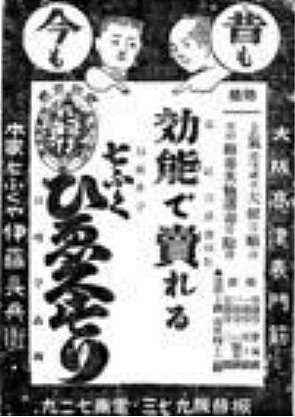
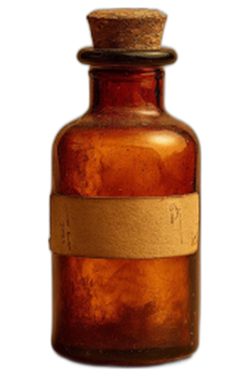
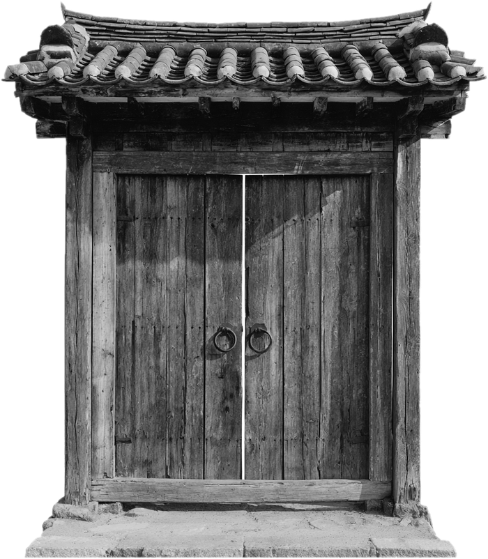
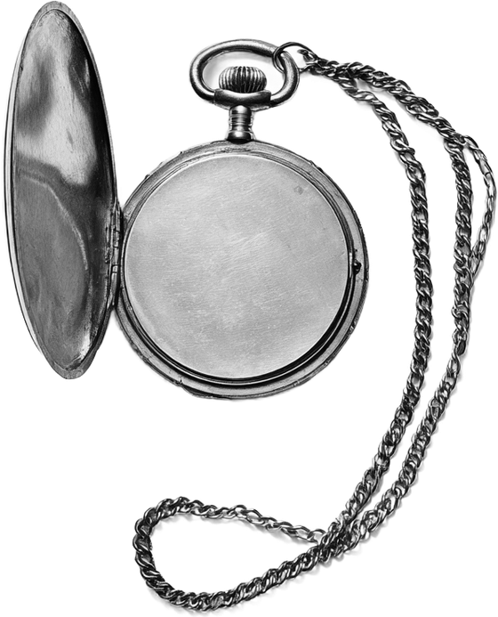

01
소화 팔 년 륙월 · 일면 광고 · 실물
사회면 · 소화 팔 년 · 경성
죽첨정 사건
【경성】한복판 죽첨정 골목에서 어린 아해의 시톄가 발견되엿는바, 장안 인심은 수일 동안 가튼 의문만 되푸리하얏더라. 범인은 누구며 엇지하야 하필 그 아해이엇든고.
지면 펼치기 →


약특효한 첩이면 낫소미신본보 사설 「미신의 참화」
쿵쿵쿵경제면 · 대정 십삼 년 · 황금정황금정 '독갑이 집' 소동
깁흔 밤에 보이지 안는 무엇이 대문을 두다리며 큰 소리를 내는지라, 동리에는 독갑이의 작란이라는 소문이 자자하얏더라.
정긔 독자 전용 · 봉함
문화예술면 · 대정 십오 년 · 관부연락선윤심덕·김우진 현해탄 사건
새벽 네 시에 관부연락선에서 두 남녀가 자최를 감초앗는바 목격한 자는 업섯다 한다. 긔사는 아모도 보지 못한 광경을 엇지 그리 썻는고.
정긔 독자 전용 · 봉함